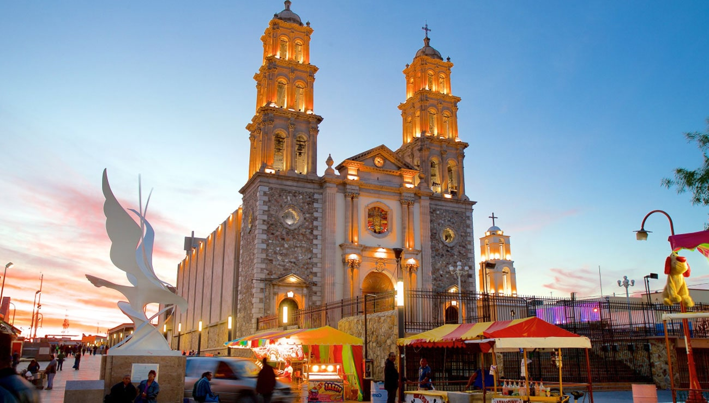

Chihuahua

En donde la historia se conoce con canciones
El estado más grande de la República Mexicana, forma parte del desierto más grande de toda América del Norte, su capital, que lleva el mismo nombre, concentra un pasado revolucionario que resuena
en cada uno de sus corridos, donde la historia toma forma de canción y en el que sus museos, monumentos, y construcciones, narran las batallas ganadas, la presencia de la fe y la influencia
arquitectónica que se resiste a perder vigencia..
Atractivos Turisticos
Cañon del Peguis

A 40 kilómetros de Ojinaga, en la carretera Chihuahua – Ojinaga se encuentra este lugar que toma su nombre de un ave que lo habita. Cuenta con 16 kilómetros de largo y una profundidad de hasta 350 metros,
paredes calcáreas totalmente verticales y el río Conchos cruza en sus profundidades. En su río se puede practicar kayak y es ideal para la práctica del rafting y cañonismo. También hay pozas alrededor, donde
se puede nadar y algunas cuevas para explorar. Además cuenta con una gran extensión de boulders o grandes piedras que constituyen todo un reto para los amantes de la escalada. Alberga algunas pinturas
rupestres con formas geométricas que datan de miles de años atrás. Hay un paraje conocido como El Salto en donde podrás encontrar la típica vegetación desértica de biznagas y nopales junto con algunas piedras.
Paquimé

Ubicadas en las afueras de Casas Grandes, Chihuahua (a 280 kilómetros al suroeste de Ciudad Juárez), las majestuosas ruinas de Paquimé son el centro urbano prehispánico más destacado del desierto de Chihuahua
y dan un testimonio elocuente de la evolución cultural de la antigua Norteamérica. Destacan por su rara arquitectura basada en el adobe y la presencia de ciertos rasgos culturales de origen mesoamericano.
Esta ciudad se pobló desde finales del primer milenio para ser el centro de la cultura homónima extendida por un gran territorio del norte de México y el suroeste de Estados Unidos. Su época de mayor esplendor,
sin embargo, ocurrió entre los siglos xi y xiv después de los cuales quedó abandonada. Desempeñó un papel destacado en las rutas comerciales entre Mesoamérica y el norte del continente y logró un desarrollo
urbanístico y arquitectónico notable que incluía importantes obras hidráulicas (canales y aljibes, por ejemplo), sistemas de calefacción y edificios de varios pisos. Los primeros españoles quedaron tan sorprendidos
con estas ruinas que por ellas llamaron Casas Grandes al lugar.
Animal en peligro de extinción
Lobo Mexicano

El lobo mexicano es la subespecie más pequeña de las 30 subespecies de Norteamérica. Su hábitat se podía dar en diversos sitios, desde zonas desérticas y semiáridas hasta bosques, extendiéndose por México, Texas y
Arizona, ocupando un amplio territorio que posteriormente se vio muy reducido. Por lo general, son animales de hábitos nocturnos y su dieta se basa en venados, borregos, antílopes, liebres y roedores.
En la época de reproducción, y tras un periodo de gestación de 65 días aproximadamente, los lobos mexicanos nacen ciegos y sordos, por lo que durante las primeras semanas no salen de la madriguera. La madre los
amamanta y limpia la madriguera, mientras el macho los protege a pocos metros. En su etapa de desarrollo, tras terminar el periodo de mamar, los cachorros ingieren alimento regurgitado por los padres. Pero la reducción
de sus presas provocó que atacasen al ganado. Eso provocó que los ganaderos y las autoridades los cazasen de forma desmedida y su población descendiese hasta rozar la extinción.
Hacia el año 1950, el lobo mexicano prácticamente había desaparecido en estado salvaje. Los esfuerzos de recuperación comenzaron a finales de la década de 1970 tanto en Estados Unidos como en México, donde se inició
un programa de recuperación en cautiverio. El plan ha logrado que, a finales de 2012, se estimaba que vivían 75 lobos en las zonas de recuperación, y posteriormente, en 2014, se produjo el primer nacimiento de un lobo
en entorno salvaje tras su reintroducción en la naturaleza.
¿Cómo llego a Chihuahua?
El Estado de Chihuahua está situado en la región central del norte de la República Mexicana sobre la frontera con Estados Unidos. Limita al norte, con Estados Unidos de América (los estados de Nuevo México y Texas);
al este, con Coahuila de Zaragoza; al sur, con Durango y Sinaloa; y al oeste, con Sinaloa.